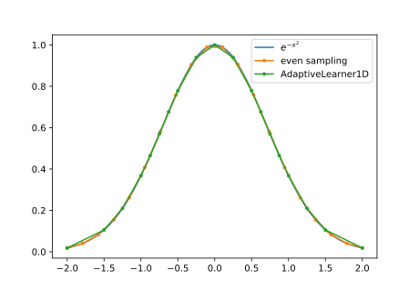
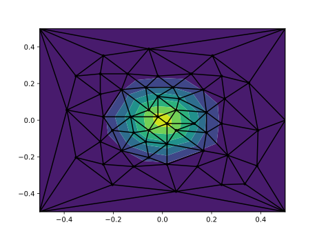

Adaptive
Here I show how one can use Adaptive.jl wrapper to make adaptivelly smapled figures. Before we start let's set up our environment by loading a packages:
using Distributed
addprocs(2)
using TaskMaster
using Adaptive
using PyPlotwhere Adaptive.jl at the moment needs to be added directly from the GitHub repository.
AdaptiveLearner1D
@everywhere f(x) = exp(-x^2)
fig = figure()
x = collect(range(-2,stop=2,length=200))
plot(x,f.(x),label=L"e^{-x^2}")
xx = collect(range(-2,stop=2,length=20))
plot(xx,f.(xx),".-",label="even sampling")
master = WorkMaster(f)
learner1d = AdaptiveLearner1D((-2,+2))
loop = Loop(master,learner1d)
evaluate!(loop,1:20)
plot(learner1d.x,learner1d.y,".-",label="AdaptiveLearner1D")
legend()
savefig("learner1d.svg")
AdaptiveLearner2D
@everywhere f(p) = exp(-p[1]^2 - p[2]^2)
master = WorkMaster(f)
learner2d = AdaptiveLearner2D([(-3,+3),(-3,+3)])
loop = Loop(master,learner2d)
evaluate!(loop,learner->learner.loss()<0.05)
fig = figure()
p,tri,v = learner2d.points, learner2d.vertices, learner2d.values
tricontourf(p[:,1],p[:,2],tri.-1,v)
triplot(p[:,1],p[:,2],tri.-1,"k.-")
savefig("learner2d.svg")